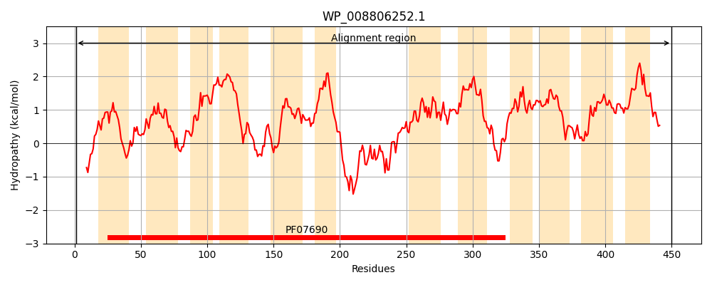
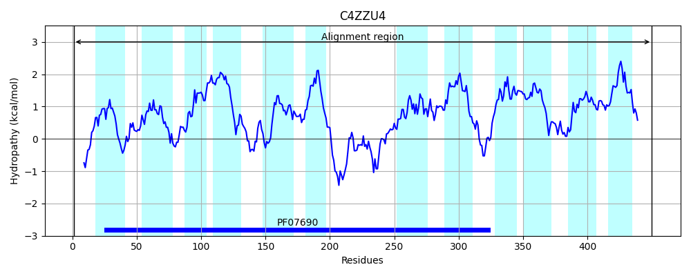
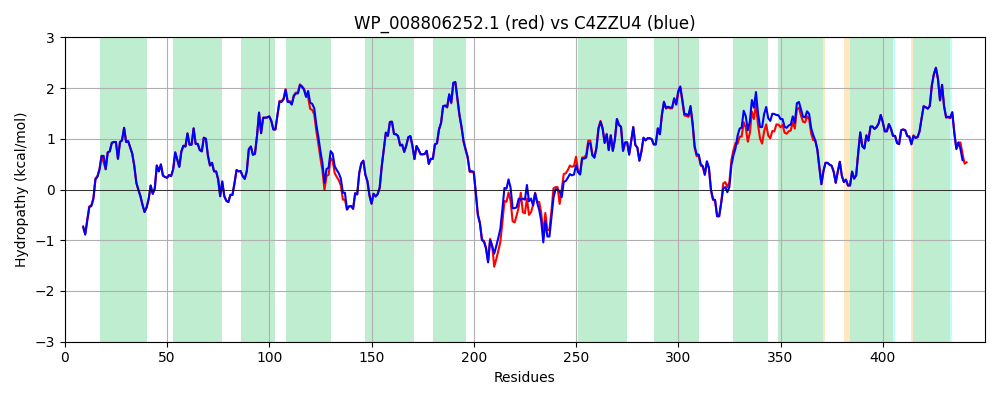

Hit Accession: C4ZZU4
Hit TCID: 2.A.1.14.40
Hit Description: gnl|BL_ORD_ID|2538 gnl|TC-DB|C4ZZU4|2.A.1.14.40 Predicted D-glucarate transporter OS=Escherichia coli (strain K12 / MC4100 / BW2952) GN=gudP PE=4 SV=1
Mach Len: 450
e:0.000000
Query TMS Count : 12
Hit TMS Count: 12
TMS-Overlap Score: 13.100000
Predicted Substrates:CHEBI:14311;glucarate(2-)
BLAST Alignment:
Score: 2229 , Bit scores: 863 bits, E-value: 0.0e+00, Alignment length: 450, Percentage identity: 93
Query: 1 MSSLSQAATAAEKRTNARYWIVVMLFIVTSFNYGDRATLSIAGSEMAKDIGLDPVGMGYVFSAFSWAYVIGQIPGGWLLDRFGSKRVYFWSIFIWSMFTLLQGFVDIFSGFGIIIALFTLRFLVGLAESPSFPGNSRIVAAWFPAQERGTAVSIFNSAQYFATVIFAPIMGWLTHEVGWSHVFFFMGGLGIVISFVWLKVIHDPNNHPGVNQKELDYIAEGGALINMDQKSSAQKVPFSVKMGQIRQLIGSRMMIGIYIGQYCINALTYFFITWFPVYLVQARGMSILKAGFVASVPAVCGFVGGVLGGVISDWLMRRTGSLNIARKTPIVLGMLLSMTMLMCNYVNVEWMVIGFMAMAFFGKGIGALGWAVMADTAPKEISGLSGGLFNMFGNISGIVTPIAIGYIVGTTGSFNGALIYVGIHALVAVLSYLVLVGDIKRIELKPVVGR 450
MSSLSQAA++ EKRTNARYWIVVMLFIVTSFNYGDRATLSIAGSEMAKDIGLDPVGMGYVFSAFSWAYVIGQIPGGWLLDRFGSKRVYFWSIFIWSMFTLLQGFVDIFSGFGII+ALFTLRFLVGLAE+PSFPGNSRIVAAWFPAQERGTAVSIFNSAQYFATVIFAPIMGWLTHEVGWSHVFFFMGGLGIVISF+WLKVIH+PN HPGVN+KEL+YIA GGALINMDQ+++ KVPFSVK GQI+QL+GSRMMIG+YIGQYCINALTYFFITWFPVYLVQARGMSILKAGFVASVPAVCGF+GGVLGG+ISDWLMRRTGSLNIARKTPIV+GMLLSM M+ CNYVNVEWM+IGFMA+AFFGKGIGALGWAVMADTAPKEISGLSGGLFNMFGNISGIVTPIAIGYIVGTTGSFNGALIYVG+HAL+AVLSYLVLVGDIKRIELKPV G+
Sbjct: 1 MSSLSQAASSVEKRTNARYWIVVMLFIVTSFNYGDRATLSIAGSEMAKDIGLDPVGMGYVFSAFSWAYVIGQIPGGWLLDRFGSKRVYFWSIFIWSMFTLLQGFVDIFSGFGIIVALFTLRFLVGLAEAPSFPGNSRIVAAWFPAQERGTAVSIFNSAQYFATVIFAPIMGWLTHEVGWSHVFFFMGGLGIVISFIWLKVIHEPNQHPGVNKKELEYIAAGGALINMDQQNTKVKVPFSVKWGQIKQLLGSRMMIGVYIGQYCINALTYFFITWFPVYLVQARGMSILKAGFVASVPAVCGFIGGVLGGIISDWLMRRTGSLNIARKTPIVMGMLLSMVMVFCNYVNVEWMIIGFMALAFFGKGIGALGWAVMADTAPKEISGLSGGLFNMFGNISGIVTPIAIGYIVGTTGSFNGALIYVGVHALIAVLSYLVLVGDIKRIELKPVAGQ 450 | Protein Hydropathy Plots: |
|---|
|  |  |
Pairwise Alignment-Hydropathy Plot:
|
|---|
|  |